Note
Access to this page requires authorization. You can try signing in or changing directories.
Access to this page requires authorization. You can try changing directories.
This chapter gives an overview of the fundamental tasks involved in instructing a glyph.
Choosing a scan conversion setting
One of the key decisions to be made in instructing a TrueType font is the choice of scan conversion mode. Font designers can choose between a fast scan conversion mode and a dropout control scan conversion mode. This choice is made by setting the value of the Graphics State variable scan_control. The interpreter considers each of three conditions in determining whether dropout control mode will be used:
- Is the glyph rotated?
- Is the glyph stretched?
- Is the current setting for ppem less than a specified ppem value?
It is also possible to turn dropout control off completely.
Controlling rounding
The TrueType interpreter uses the round_state to determine the manner in which values will be rounded. Instructions are used to set the value of the round_state, a Graphics State variable. The setting of round_state determines how values will be rounded by the interpreter.
The instruction set makes it easy to set a number of predefined round states that will round values to the grid, pixel centers (half grid), or to either the grid or pixel centers. It is also possible to specify whether values should be rounded down or rounded up. If none of the predefined rounding options suffices, the SROUND instructions provide very fine control of the rounding of values, making it possible to choose a phase, threshold, and period for the rounding function. The S45ROUND allows the same fine control as SROUND but is used when movement is along a 45 degree axis with the x-y plane.
A number of instructions round the value they obtain before moving any points. The effect of using any of the MDRP, MIRP, MIAP, MDAP, or ROUND instructions depends on the value of the round_state graphics state variable along with that of the control_value_cut_in. The ROFF instruction turns off rounding but allows the instruction to continue looking at the cut-in value.
Points
Outline points are specified by their location in the coordinate grid and by whether they are on or off curve points. Managing a point means managing its position in space and its status as an on or off curve point. The interpreter uses zones and reference points to manage the set of points that comprise the current glyph and to refer to specific points within that set.
Zones
Any point the font scaler interpreter references is in one of two zones, that is one of two sets of points that potentially make up a glyph description. The first of these referenced zones is zone 1 (Z1) and always contains the glyph currently being interpreted.
The second, zone 0 (Z0), is used for temporary storage of point coordinates that do not correspond to any actual points in the glyph in zone 1. Zone 0 is useful when there is a need to manipulate a point that does not exist on the glyph or if you need to remember an intermediate point position. (This is the twilight zone.)
The profile table establishes the maximum number of twilight points. These are numbers 0 through maxTwilightPoints -1 and are all set to the origin. These points can be moved in the same manner as any of the points in zone 1.
Points in zone 0 are moved to useful positions by using the MIAP and MIRP instructions and setting gep0 to point to Z0. Frequently, it is useful to set points in Z0 to key metric positions for the font.
Zone pointers
Three zone pointers, gep0, gep1 and gep2 are used to reference either zone 0 or zone 1. Initially, all three zone pointers will point to zone 1.
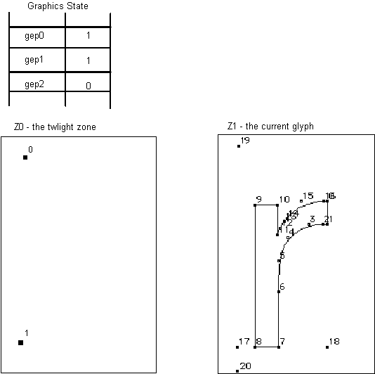
Reference points
Zone pointers provide access to a group of points. Reference points provide access to specific points within the group. The interpreter uses three numbered reference points: rp0, rp1, and rp2. Each can be set to a number corresponding to any of the outline points in the glyph in zone 1 or any of the points in zone 0.
As shown in the following figure, two different reference points can refer to the same outline point.
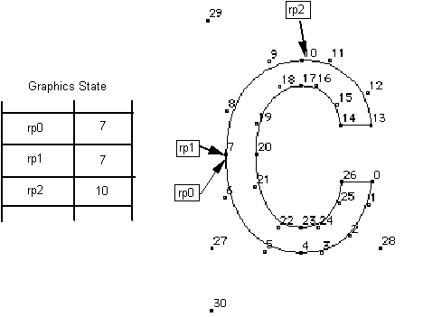
Collectively the zone pointers and reference points belong to the Graphics State. Their values can be altered using instructions. Many TrueType instructions rely on the graphics zone pointers and the reference points to fully specify their actions.
Phantom points
The Microsoft rasterizer v.1.7 or later will always add four “phantom points” to the end of every outline to allow either widths or heights to be controlled. (MS rasterizers earlier than v.1.7 only add two phantom points, allowing only widths to be controlled.)
If the entire set of contours for a glyph requires “n” points (i.e., contour points numbered from 0 to n-1), then the scaler will add points n, n+1, n+2, and n+3. Point “n” will be placed at the glyph left sidebearing point; point “n+1” will be placed at the advance width point; point “n+2” will be placed at the top origin; and point “n+3” will be placed at the advance height point. For an illustration of how these phantom points are placed, see Figure 2-1 (points 17, 18, 19, 20) and Figure 2-2 (points 27, 28, 29, and 30).
All four phantom points may be controlled by TrueType instructions, with corresponding effects on the sidebearings, advance width, and advance height (in the case of vertical positioning) of the instructed glyph. The side bearings, advance width, and advance height are computed using these phantom points and are called the device-specific widths and heights (since they reflect the results of grid fitting the width or height along with the glyph to the characteristics of the device). The device-specific widths or heights can be different from or identical to the linearly scaled widths or heights (obtained by simple scaling operations), depending on the instructions applied to the phantom points.
Before applying a TrueType instruction on height related phantom points (n+2 and n+3), use GETINFO[ ] to check that the rasterizer is a MS rasterizer v.1.7 or later.
Determining distances
At the lowest level, instructing a glyph means managing the distances between points. The first step in managing a distance is often one of determining its magnitude. For example, the first step in setting up the Control Value Table involves measuring the distances between key points in a font. Measuring the distance between two points in a glyph outline, while not difficult, must take certain factors into account.
All distance measurements are made parallel to the projection_vector, a unit vector whose direction will be indicated by a radius of a circle. Distances are projected onto this vector and measured along it. Distances have a direction that reflects the direction of the vector. Measurements can refer to the distance between points in the original character outline or between points in the grid-fitted outline. The instruction that measures distances (MD) takes a Boolean value which determines whether distances will be measured on the original outline or in the grid-fitted outline.
Additionally, the TrueType interpreter distinguishes between three different types of distances: black, white, and grey. Certain instructions (MDRP, MIRP, ROUND) require that you specify a distance type.
Black distances cross only black areas; white distances, white areas; and grey distances a combination of the two. In the following illustration, examples of black, white, and grey distances are shown. The distance [2,1] is black; [3,0] is grey and [4,6] is white.
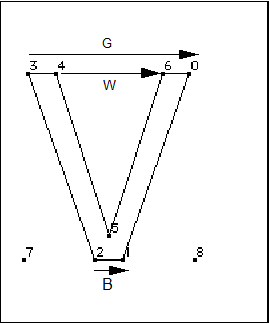
The distance type is used in determining how the ROUND and instructions that use the round_state will work with different output devices. For gray distances, rounding is unaffected. Black or white distances, however, require a compensation term be added or subtracted before rounding takes place. The amount of compensation needed will be set by the device driver. For example, if a printing engine has large pixels, the interpreter will compensate by shrinking black distances and growing white distances. Gray distances, because they combine black and white distances, will not change.
For the three instructions sensitive to distance types, two bits of the opcode are used to determine the type. For these two bits, the values 0 (grey), 1 (black) and 2 (white) are used. The two bits allow for a fourth value, 3, which is not used. Some implementations treat this as type 0, while other implementations treat this as an error. Fonts must not specify distance type 3 for these instructions.
When the distance between two points is determined, the distance is always measured in the direction specified by the projection_vector. Similarly, when a point is moved, the distance it is moved will be measured along the projection_vector. When thinking about how the interpreter will project a distance, you may find it convenient to imagine that distances are projected onto a ruled line that is parallel to the projection vector.
In the example shown, distances are measured along a line that is parallel to the projection_vector. The distance from point 1 to point 2 must be projected onto the projection_vector (that is a line parallel to the projection_vector) before being measured. Since the line from point 1 to point 3 is parallel to the vector, the projection of the distance can be thought of as simply the line from 1 to 3. Since the projection of the line from point 4 to point 1 is perpendicular to the vector, the distance from point 4 to point 1 is zero even though the points do not coincide.
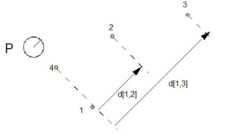
The vector can be set in any direction desired. In a simple case, the projection vector might be set to measure distance in the x-direction. In such a case, the vector is parallel to the x-axis. Similarly to measure distance in the y-direction, the projection_vector must be parallel to the y-axis.
To determine the distance between two points when the projection_vector points in the positive x-direction, one need only take the difference between their x coordinates. For example, the distance between the points (2, 1) and (7, 5) will be 5 units. Similarly, if the projection_vector pointed in the positive y-direction, the distance between the points would be 4 units.
Note that because the projection_vector has a direction, distances have a sign. Positive distances are those that are measured with the projection_vector. Negative distances are those that are measured against the projection_vector.
In the following example, the projection_vector points east (in the direction of the positive x-axis). The distance between points 1 and 2 is positive when measured from west to east (from point 1 to point 2). It is negative when measured from east to west (from point 2 to point 1).
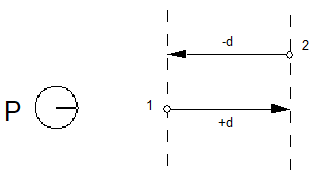
In many cases, it is convenient to disregard the sign associated with a distance. When the auto_flip Graphics State variable is set to TRUE, the sign of CVT entries will be changed when needed to match the sign of the actual measurement. This makes it possible to control distances measured with or against the projection_vector with a single CVT entry.
Controlling movement
The direction in which points can move is established by the Graphics State variable freedom_vector.
When a point is moved, its movement is constrained to be in a direction parallel to that of the freedom_vector. Assuming the freedom_vector is pointing in the direction of the positive x-axis (points east), movement in the positive x direction (from west to east) will have a positive magnitude. Movement in the negative x-direction (from east to west) will have a negative magnitude.
Moving points
WARNING: When moving points, it is not valid for the freedom_vector and the projection_vector to be orthogonal.
There are several instructions that move outline points. These instructions either move points relative to a reference point (the relative instructions) or move points to a specified location in the coordinate system (the absolute instructions).
The following figure illustrates a relative move. The point p is moved so that it is at distance d from the reference point rp.
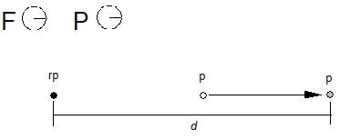
The figure below illustrates an absolute move. Here the point p is moved a distance d from its current position to a new position. The distance is measured along the projection_vector. Movement is along the freedom_vector.
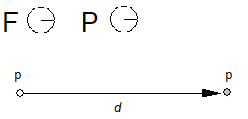
In specifying a move, some move instructions use the outline distance (direct instructions). Other instructions specify the value of d only indirectly by referring to a value in the CVT or to a value on the stack (indirect instructions).
In attempting to move a point you must first decide on the direction and distance. Beyond this, decide whether you want to move that point an absolute distance or relative to another point. If the move is relative be sure you know which reference point will be used by the instruction. In some cases, you may need to change the value of that reference point to the one you desire. Finally decide whether you will use the original outline distance or will refer to a distance in the CVT or the stack.
By choosing to use the original outline distance you can preserve the original design distance between two points. In contrast, if you choose an indirect method of specifying a distance, that is you use the CVT, you allow that distance to be matched to some important value for that font or glyph.
All of the move instructions with the sole exception of MSIRP are affected by the round_state. The instructions allow you to choose whether they should take the round_state variable into account. In effect this means that, if rounding is turned on, the distance a point is actually moved will be affected by the type of rounding that is performed.
In the example below, point p is moved distance d to a new location p' and then rounded to the nearest grid boundary.
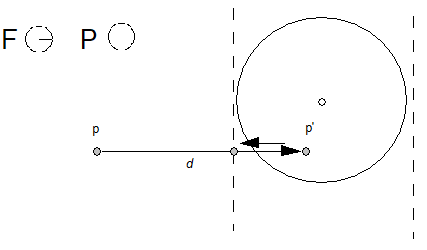
Managing the direction of distances
The auto_flip variable owes its existence to the fact that the TrueType interpreter distinguishes between distances measured in the direction of the projection_vector (positive distances) and those that are measured in the direction opposite to the projection_vector (negative distances).
The setting of the auto_flip Boolean determines whether the sign of values in the Control Value Table is significant. If auto_flip is set to TRUE, the values of CVT entries will be changed when necessary to match the sign of the actual measurement. This makes it possible to control distances measured with or against the projection vector.
For example, the CVT might contain an entry for uppercase stem widths. At times it may be convenient to control widths from left to right while at other times it may be convenient to control them from right to left. One case will produce a positive distance, the other a negative distance. Without auto_flip it would be necessary to have two CVT entries (+UC_Stem and -UC_Stem) instead of just one. Setting auto_flip to TRUE makes the sign of the value read from the CVT the same as the sign of the distance between the points we are controlling in the original unmodified domain.
Generally, auto_flip is set to TRUE, but if it becomes necessary to distinguish between a positive or negative distance, the variable must be set to FALSE.
Interpolating points
When instructions are used to change the position of a few of the points in a character outline, the curves that make up the character may become kinked or otherwise distorted. It may be desirable to smooth out the resulting curve. This smoothing out process is actually a redistribution of all points that have not been moved so that their positions relative to the moved points remain consistent.
To assist in managing the shape of outlines, the interpreter uses the concept of touching a point. Whenever an instruction has the effect of moving a point, that point is marked as touched in the x-direction or y-direction or both. The IUP instruction will affect only untouched points. It is possible to explicitly untouch a point so that it will be affected by an interpolation instruction.
Maintaining minimum_distance
When the width of a glyph feature decreases below a certain size, rounded values may become zero. Allowing values to round to zero can result in certain glyph features disappearing. For example, a stem might disappear entirely at small point sizes. By setting a minimum_distance of one pixel you can assure that even at small sizes those features will not disappear.
In the example shown below, the minimum_distance value is used to ensure that the stem of the r does not disappear at small sizes. By ensuring that the distance from point 9 to point 10 is always at least one pixel, this goal is accomplished.
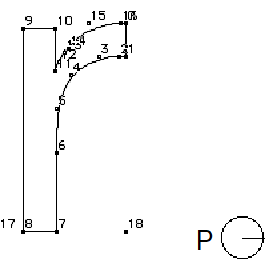
Controlling regularization using the cut_in
The TrueType language offers several means of coordinating values for glyph features across a font. Such coordination results in a uniformity of appearance known as regularization. Regularization is useful when the number of pixels available for a feature or glyph are few in number. It prevents small differences in the size of features from becoming vastly exaggerated by the change in the placement of pixel centers within a glyph outline. Regularization becomes a liability when small differences in the size or placement of features can be effectively represented by the number of available pixels.
TrueType allows you the best of two worlds in making it possible to regularize features at small numbers of pixels per em while allowing the outline to revert to the original design once a sufficient number of pixels is available. There are two different ways to accomplish this goal. Each one uses a cut_in value. The first method uses the Control Value Table and the control_value_cut_in and allows you to coordinate values using entries in the CVT. This method allows for a variety of values to be coordinated. The second method takes regularization a step further and forces all values to revert to a single value. It relies on the single_width_cut_in and the single_width_value.
Control_value_cut_in
The control_value_cut_in makes it possible to limit the regularizing effects of the CVT to cases where the difference between the table value and the measurement taken from the original outline is sufficiently small. It allows the interpreter to choose, at some sizes, to use the CVT value while, at other sizes, to revert to the original outline. When the absolute difference between the value in the table and the measurement directly from the outline is greater than the cut_in value, the outline measurement is used. The effect of the control_value_cut_in is to allow regularization below a certain cut off point while allowing the subtlety of the design to take over at larger sizes.
The cut_in value affects only instructions that refer to values in the CVT, the so-called indirect instructions, MIRP and MIAP, and only if the third Boolean is set to TRUE.
| CVT Value | Original Outline Value | |Diff| | cut_in | |Diff| > cut_in use outline | |Diff| cut_in use CVT |
|---|---|---|---|---|---|
| 93 | 80 | 13 | 17/16 | 80 | - |
| 100 | 99 5/16 | 11/16 | 17/16 | - | 100 |
| 97 | 95 15/16 | 17/16 | 17/16 | 97 |
In the example shown, the capital J dips below the base line in the original design. When the character is grid-fitted, however, the curve is held to the baseline by an indirect instruction. That instruction references the CVT, subject to the default cut_in value of 17/16. At this value the curve is held to the base line through 81 pixels per em but reverts to its original design at 82 pixels per em as shown.
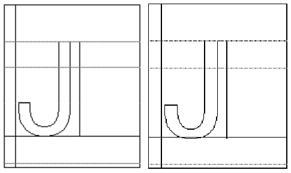
The effect of the cut_in varies with its value. Decreasing the value of the cut_in will have the effect of causing the outline to revert to the original design at a smaller ppem value. Increasing the value of the cut_in will cause the outline to revert to the original design at a higher ppem value.
The single_width_cut_in
The single_width_cut_in is the distance difference at which the interpreter will ignore the values in the Control Value Table and in the outline in favor of a single-width value. It allows features to revert to a single predetermined size for small numbers of pixels per em.
Having all controlled glyph features assume the same dimensions might be an advantage for certain fonts at very small grid sizes. The single_width_value is used when the absolute difference between the single_width_value and the original value is smaller than this single_width_cut_in.
The default value for the single_width_cut_in is zero. In effect, this means that the default is ignore this cut_in value.
The single_width_value
The single_width_value is used when the difference between the Control Value Table and the single_width_value is less than the single_width_cut_in. For example, if the single_width_value were set to 2 pixels, features meeting the single_width_cut_in test would be regularized to be 2 pixels wide.
Managing at specific sizes
Most TrueType instructions are independent of size. They are used to control a feature over the full range of sizes. Occasionally, it is necessary to alter a glyph outline at a specific size to include or exclude certain pixels. In other words, occasionally it is desirable to make an exception to the outline that would otherwise be produced by the other instructions. Such exceptions are made using the DELTA instructions.
There are two types of DELTA instructions. The DELTAP instructions work by moving points. The DELTAC instructions work by changing values in the CVT.
For example, without a DELTA instruction the circumflex accent shrinks to a single pixel at 9 ppem. Using DELTAs, the appearance is improved by lowering points 5, 2 and 1 by one pixel at 9 ppem.
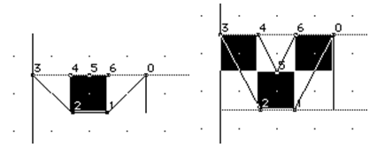
The delta_base
The delta_base is the base value used to calculate the range of point sizes to which a delta instruction will apply. Changing the delta_base allows you to change the range of ppem sizes affected by each of the DELTA instructions.
The three pairs of DELTA instructions are grouped according to the range of pixels they potentially affect, with each group beginning at 16 pixels per em larger than the previous group. All DELTAC1 and DELTAP1 instructions potentially can affect glyphs at sizes beginning at delta_base pixels per em through delta_base plus 15 pixels per em. The DELTAP2 and DELTAC2 instructions affect the range beginning at delta_base plus 16 pixels per em. The DELTAP3 and DELTAC3 instructions affect delta_base plus 32 pixels per em.
The delta_shift
The delta_shift value is the power to which an exception is raised. By varying the value of the delta_shift, you trade off fine control of outline movement as opposed to total range of movement. A low delta_shift favors range of movement over fine control. A high delta_shift favors fine control over range of movement.
Points can be moved by multiples of a fixed amount called a step. The size of the step is 1 divided by 2 to the power delta_shift.
Managing Anti-Aliasing
Windows offers users the option of displaying anti-aliased text. The OpenType 'gasp' table can be used to control the size ranges at which grayscaling and gridfitting occur. Additionally, TrueType instructions can be used to finely control the use of grayscale pixels in rasterizer version 1.7 and later.
The following TrueType code sample illustrates how TrueType instructions can determine if the installed rasterizer supports anti-aliasing, and then provide hints to the rasterizer.
PUSHB[2] 2 0 /* PUSH : storageID, FALSE */
WS /* FALSE by default */
PUSHB[3] 23 17 1 /* PUSH : jump1, jump2, rast. version flag */
GETINFO /* get the rasterizer version */
DUP
PUSHB[1] 34
LTEQ
ROLL
SWAP
JROT /* we are at MS rasterizer version 1.7 or higher (> 34) */
PUSHB[1] 64
GT
JROT /* we are in the MS version range (<= 64) */
PUSHB[2] 10 32 /* PUSH : jump3, HintForGray flag */
GETINFO /* we are on the new MS Rasterizer, ask for HintForGray */
PUSHW[1] 4096 /* PUSH : HintForGray flag */
NEQ
JROT
PUSHB[2] 2 1 /* PUSH : storageID, TRUE */
WS /* Storage #2 set to TRUE, grayscale */
PUSHB[1] 3 /* PUSH : jump4 */
JMPR
POP
POP
Collaborate with us on GitHub
The source for this content can be found on GitHub, where you can also create and review issues and pull requests. For more information, see our contributor guide.
OpenType specification